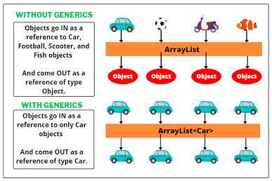

정답: 제네릭 (Generics)
해설: 무한 배열(ObjectArray)을 직접 만들 때 겪었던 불편함을 단번에 해결해 준 문법입니다.
InfoManger Student 처럼 제네릭을 쓰면 애초에 학생 전용 매니저가 되기 때문에,
꺼낼 때 형변환(다운캐스팅)을 할 필요가 없습니다.

정답을 맞추셨나요? 상단 왼쪽 뒤로가기를 눌러 본인이 쓴 정답과 비교해보세요.